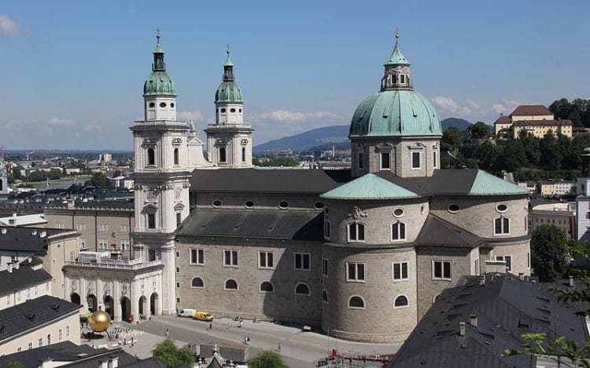
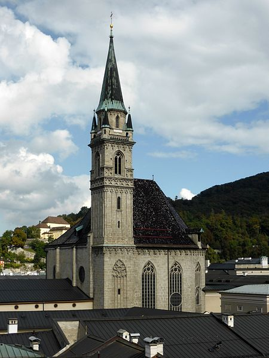

Тур в Зальцбург

Как бы Вы ни захотели познакомиться с Зальцбургом: индивидуально или в группе, пешком или на фиакре, в
сопровождении
гида или совсем необычно – на сегвее, город Моцарта открывает свои тайны различным образом.
Чтобы познакомиться с городом, Вам понадобится правильное руководство. Это может быть личный гид, который
покажет Вам
потаённые места Зальцбурга. Или короткая поездка на автобусе, чтобы увидеть важнейшие удалённые уголки
города. Некоторые
романтически настроенные путешественники предпочтут обзорную экскурсию в конном экипаже, а другие – в
захватывающей
обстановке на экскурсионном автобусе-амфибии. С какой стороны Вы бы ни захотели познакомиться с
Зальцбургом –
предложение здесь разнообразно.
Зальцбург расположен в сердце Европы и окружён восхитительной природой и историческими памятниками. В
ближайших
окрестностях расположены многие достопримечательности, что позволяет удобно совместить пребывание в городе
Моцарта с
экскурсионными турами по его знаменитым пригородам. Гости Зальцбурга обладают при этом большим
преимуществом: им не
нужно ни о чём заботиться, а только любоваться местными красотами.
Жемчужина Скандинавии, главная драгоценность Северной Европы — так величают сказочный Стокгольм. Город
расположен на
четырнадцати зелёных островах, омываемых водами Балтийского моря, поэтому от местных можно слышать
шуточное утверждение,
что Стокгольм состоит наполовину из воды, наполовину — из зелени. Достопримечательности Стокгольма — это
особая тема,
ведь история города насчитывает почти 8 столетий, и за это время город стал настоящей сокровищницей, где
старинные музеи
и галереи, церкви и дворцы чередуются с цветущими парками и мощёными площадями. Живописный город
Скандинавии, родина
великих учёных и сказочных персонажей Астрид Линдгрен находит своего гостя, и каждый заранее знает, с
какой целью он
едет в город и что посмотреть в Стокгольме.
Что посмотреть в Зальцбурге в первую очередь?
Что посмотреть в Зальцбурге в первую очередь?1. Резиденцплац
Многие гиды в Зальцбурге советуют начать знакомство с городом с его главной площади. На ней располагается мраморный фонтан в стиле барокко, высотой в 15 метров, старинные бюргерские коттеджи, Дворец архиепископа, Кафедральный собор и еще множество других архитектурных шедевров.
2. Капительплатц

Еще одна площадь, ценным украшением которой является скульптура П. Фюрста – создателя конфет «Mozartkugel». Обширная территория находится возле стен зальцбургской крепости. В особняках в стиле барокко расположены резиденции священнослужителей города. Если вас интересует старинная и современная архитектура Зальцбурга, приехать сюда вам следует обязательно.
3. Крепость Хоэнзальцбург
Объект, созданный в оборонительных целях и ни разу не взятый за все годы существования, считается визитной карточкой города, и входит во все списки “главные достопримечательности Австрии“. Подняться к нему можно на фуникулёре. Дата строительства – 11 столетие. В настоящий момент это самая крупная средневековая крепость Европы, которой удалось целиком сохраниться. Внутри Хоэнзальцбурга находится музейный комплекс, выставочными образцами которого являются обмундирование, оружие, исторические предметы, принадлежавшие архиепископам. Поднявшись на верхний уровень здания, можно увидеть панорамы всего города.
4. Дворец и сады Мирабель
Самые прекрасные и романтичные достопримечательности Зальцбурга, созданные в 17 столетии. Дворцово-парковый комплекс выполнен в стиле барокко. На его территории можно провести свадебную церемонию, арендовав, например, парадный архиепископский зал. Даже лучшие отели в Зальцбурге не смогут предложить вам такой роскоши и величия, какими отличаются интерьеры дворца Мирабель.
5. Дворец Леопольдскрон
Шикарный дворец на берегу озера, созданный в стиле рококо в начале 18 века. Владельцами замка являлись многие люди, и в том числе, М. Рейнхардт (один из самых знаменитых театральных режиссеров Австрии). Именно он придал зданию тот вид, в котором постройка пребывает сейчас. Внутри Леопольдскрона открыт музей, в котором среди прочих шедевров и ценностей находятся древние полотна Ренси. Учтите, что этот дворец находится в частной собственности, поэтому попасть внутрь будет непросто. Один из вариантов – бронирование номера в здешнем отеле. Гостям предлагается осмотр буквально всех помещений и залов, включая старинную библиотеку и живописный бальный зал. Прилегающая к замку территория столь же восхитительна: живописные изгороди, красивые фонтаны и древние вазоны из мрамора, озелененные лужайки и чудесное озеро.
6. Дворец Хельбрунн
Дата строительства – 17 столетие. Объекту удалось дойти до наших времен, практически не изменив первоначальный облик. Внутри на потолках и стенах можно увидеть фрески работы А. Масканьи. Огромный интерес вызывает музыкальная гостиная – восьмиугольное помещение с куполом. При осмотре достопримечательности необходимо пройтись по прилегающей территории с ее изящными скульптурами, декоративными фигурами, скамейками, подсвечивающимися фонтанами, павильонами и прудами. Если вы не знаете, что посетить в Зальцбурге за 1 день, но хотите насладиться и местной природой, и архитектурой, приезжайте сюда.
7. Дворец Клессхайм
Описывая лучшие достопримечательности Зальцбурга, не стоит забывать о бывшей резиденции архиепископа. В 20 столетии здание использовалось Гитлером для официальных приемов. В числе прочих гостей, тут был и Б. Муссолини, один из самых близких соратников фюрера. В настоящее время во дворце открыто казино, а также ресторан европейской кухни. Саму постройку окружают поля для игры в гольф и английской классический парк.
8. Зальцбургский собор
Великолепный архитектурный шедевр 17 столетия, считающийся одним из самых красивых и знаменитых соборов Европы. Высота здания в стиле барокко составляет около 80 метров. Внутри просторных залов могут одновременно расположиться 10 000 прихожан. При соборе работает музей. Внутреннее убранство представлено пятью органами и 11 алтарями, распятиями и флорентийскими фресками. Настоящей гордостью считается купель 14 столетия, выполненная из бронзы. В середине 18 века в ней был крещен Моцарт. В храм с мраморным фасадом и большим количеством колоколов включает в состав несколько симметричных башен.
9. Францисканская церковь
Одна из наиболее старинных церквей города, построенная в 8 столетии. Храм не раз перестраивали, поэтому его нынешний фасад и внутреннее убранство выполнены в разных стилях архитектуры. Так, в них просматриваются элементы барокко.
10. Церковь Коллегиенкирхе
Здание конца 17 века находится в центральной части города, при местном университете. Церковь создана в направлении барокко. Фасадную часть украшает оригинальная фигурная лепнина.